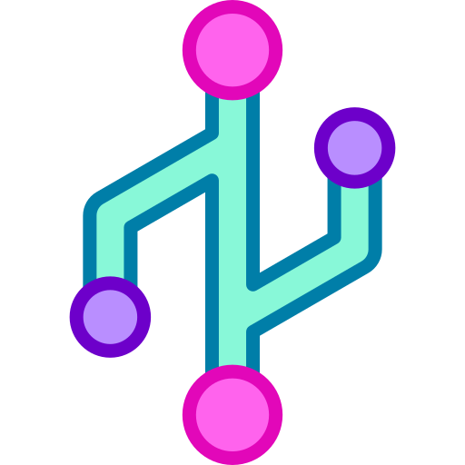

Tester QA | Aseguramiento de la calidad de Software
Tester | QA Aseguramiento de la calidad de Software
Especializado en pruebas manuales y automatizadas para garantizar
productos de alta calidad.
Pilar fundamental del desarrollo
Aseguramiento de calidad
El aseguramiento de un buen producto no es solo una fase, sino un
compromiso constante.
Mi pasión por el testing me permite identificar problemas ğŸ› ï¸ antes de
que afecten a los usuarios, garantizando la máxima experiencia en cada
entregaâ
TecnologÁas, herramientas y lenguajes de programación
HTML5
Visual Studio
Base de Datos
CSS3

Git
C++
JavaScript
MetodologÁa SCRUM
MetodologÁa SCRUM
Scrum no es solo una metodologÁa, sino un camino hacia la excelencia
continua.
Mi enfoque en Scrum permite a los equipos colaborar de manera
efectiva, adaptarse a cambios y entregar valor de manera incremental
📈, asegurando que cada fase del proyecto sea eficiente y
satisfactoria ✅.